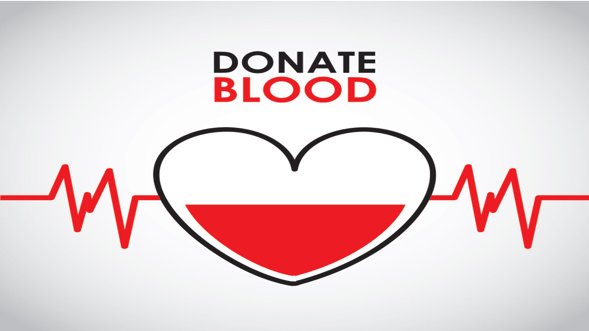
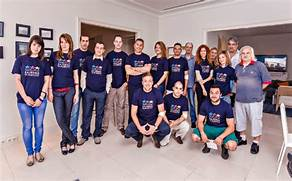

Blood Bank is to serve our community by meeting the needs of patients, hospitals, and members for safe, high quality blood products and related services.
Welcome to the new Members for Life (MFL) program! It is an ever-growing, flexible program designed to show our donors appreciation for the generous gift of life they give. The plan will continually have new elements added based on various factors, including input from our donors like you! Please continue to check back to see what’s new!
Established
1954
current membership--125,000+ families
Group Sponsors--2,100+ businesses and organizations
Population Served--1.6 million people in india

Blood Collection Technician- (Fixed Site) (Christiana Donor Center)
Blood Collection Technician- Mobile Team (NCC) (PT) (Christiana Donor Center)
Blood Collection Technician- Mobile Team (NCC) (PT) (Christiana Donor Center)
Blood Collection Technician- Mobile Team - Mobile Team (Christiana Donor Center)
Document Control Specialist/Administrative (Christiana Donor Center)
Fulfillment Specialist (MD Depot, UM Prince George's Hospital)
Lab Aide - 2:00 PM - 10:00 PM (Christiana Donor Center)
Sales and Client Relations Manager (Christiana Donor Center)
If we don't currently have an open position in your area, you may submit your resume.
If you already have an application in progress you can retrieve also.
If you have questions regarding career opportunities at the Blood Bank , please contact
Ashutosh Bajpai at (302) 737-8405, Ext. 881 or abajpai098@bbd.org.
BBD is an Equal Opportunity and Affirmative Action Employer.
When you volunteer with the American Red Cross, you become part of a group of people who truly
make a difference in the lives of their fellow Americans and help people in serious medical need.
